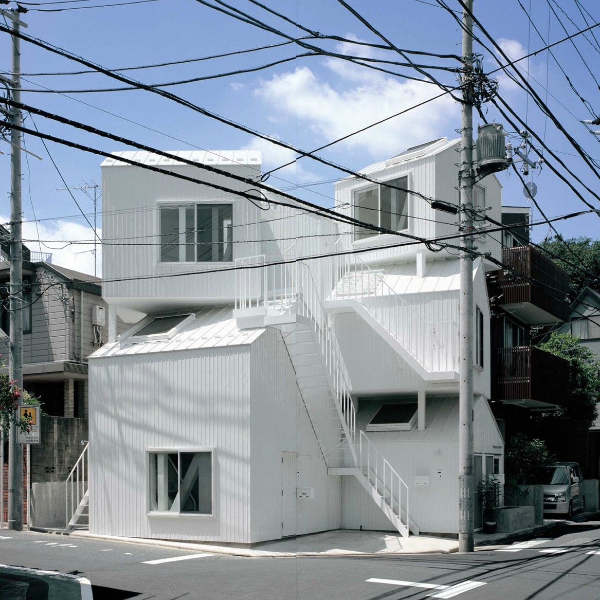
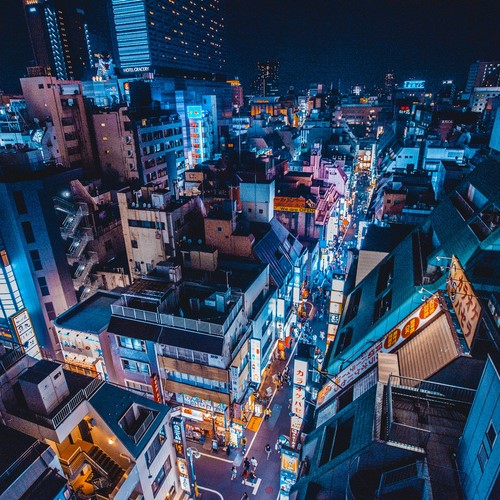
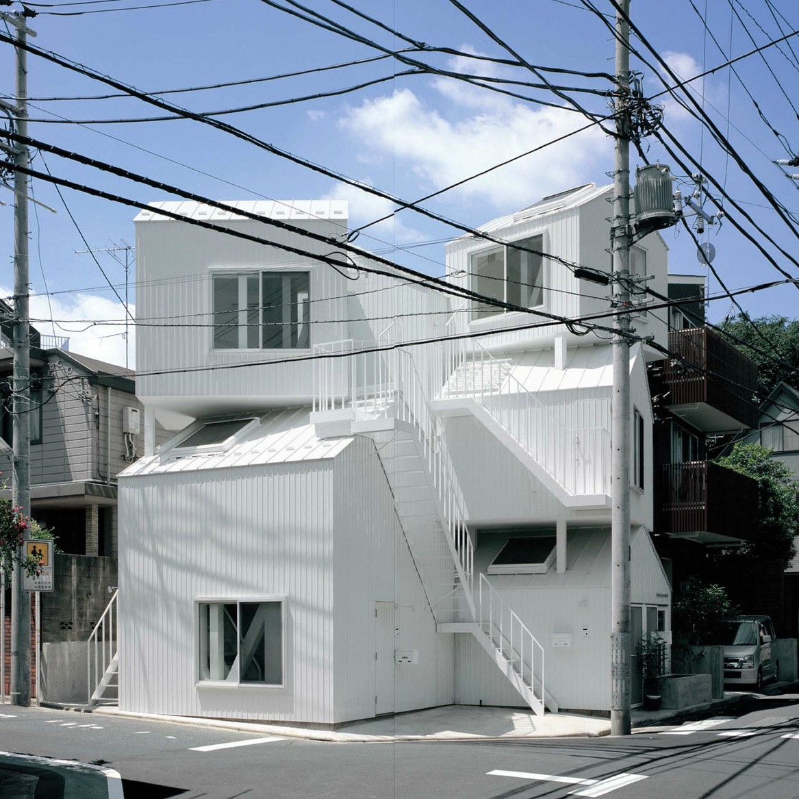
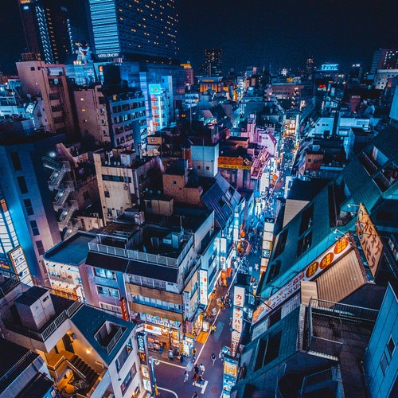

Because you deserve a break ━━
Visit the World’s Best Rooftop Gardens
Think Tokyo is nothing but a mass of concrete, steel and glass? Think again. These rooftop gardens will make you fall in love with the city all over again. more...
 



Because you deserve a break ━━
Think Tokyo is nothing but a mass of concrete, steel and glass? Think again. These rooftop gardens will make you fall in love with the city all over again. more...
Time to gift yourself a piece of Japanese design ━━
Whether it’s exquisitely crafted, razor-thin glasses, elegant lacquerware boxes, or a set of rectangular sushi plates - check out our ultimate list of Tokyo’s best interior design and tableware shops where you will find more than just beautiful dining ware. more...
Eat and drink in style ━━
When you’ve spent hours exploring all the greatness that Tokyo has to offer, what better way to unwind than in with a fresh cocktail in your hand and a gorgeous view in front of you. From luxurious hotel lobbies to quiet design lounges, here is our lowdown of where to eat and drink in style. more...